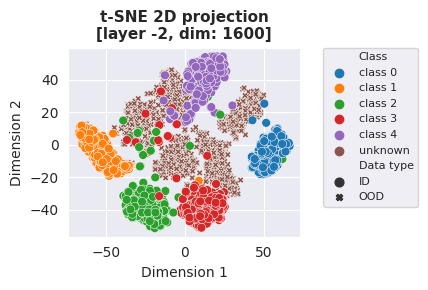
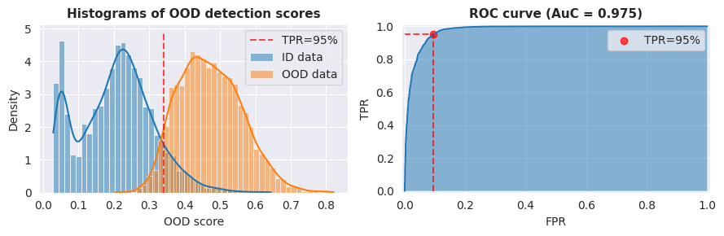

Oodeel is a library that performs post-hoc deep OOD detection on already trained neural network image classifiers. The philosophy of the library is to favor quality over quantity and to foster easy adoption. As a result, we provide a simple, compact and easily customizable API and carefully integrate and test each proposed baseline into a coherent framework that is designed to enable their use in tensorflow and pytorch.
from oodeel.methods import MLS
mls = MLS()
mls.fit(model) # A tensorflow or torch model
scores, info = mls.score(ds) # ds is a tf.data.Dataset or a torch.DataLoader
Table of contents¶
- Installation
- Quick Start
- Tutorials
- What's Included
- Development roadmap
- Contributing
- See Also
- Acknowledgments
- Creator
- License
Installation¶
Installation can be done using:
pip install oodeel
tensorflow or pytorch to be already installed (it will not install them automatically not to mess-up with existing installations). It is regularly tested with:
| Python version | Pytorch version | Tensorflow version |
|---|---|---|
3.8 |
1.11 |
2.5 |
3.9 |
1.13 |
2.8 |
3.10 |
2.00 |
2.11 |
Quick Start¶
Now that oodeel is installed, here are some basic examples of what you can do with the available modules. See also the notebooks directory for more advanced examples.
For benchmarking with one dataset as in-distribution and another as out-of-distribution¶
Load in-distribution and out-of-distribution datasets.
from oodeel.datasets import OODDataset
ds_in = OODDataset(
'mnist', load_kwargs={"split":"test"},
backend="tensorflow").prepare(batch_size) # use backend="torch" if you prefer torch.DataLoader
ds_out = OODDataset(
'fashion_mnist', load_kwargs={"split":"test"},
backend="tensorflow").prepare(batch_size)
For benchmarking with a classes subset as in-distribution and another classes subset as out-of-distribution¶
Load a dataset and split it into an in-distribution dataset and ou-of-distribution dataset depending on its label values (a common practice of anomaly detection and open set recognition).
from oodeel.datasets import OODDataset
in_labels = [0, 1, 2, 3, 4]
oods_in, oods_out = oods_test.split_by_class(in_labels=in_labels)
# info contains model predictions and labels if avail
ds_in = oods_in.prepare(batch_size=batch_size)
ds_out = oods_out.prepare(batch_size=batch_size)
Run an OOD method¶
Load an OOD method and use it on an already-trained model
from oodeel.methods import MLS
mls = MLS()
mls.fit(model)
scores_in, info_in = mls.score(ds_in)
scores_out, info_out = mls.score(ds_in)
Evaluate the method
from oodeel.eval.metrics import bench_metrics
metrics = bench_metrics(
(scores_in, scores_out),
metrics = ["auroc", "fpr95tpr"],
)
And visualize the results!¶
2D t-SNE (3D is also available).
plot_2D_features(
model=model,
in_dataset=ds_in,
out_dataset=ds_out,
output_layer_id=-2,
)

Classical histograms and AUROC curve.
plot_ood_scores(scores_in, scores_out, log_scale=False)
plot_roc_curve(scores_in, scores_out)

Tutorials¶
We propose some tutorials to get familiar with the library and its API. See the Tutorial section of the doc.
What's Included¶
The library is based on a class, OODBaseDetector, that fits a model and then scores new samples. Some baselines use extra data, so OODBaseDetector can also fit additional data if needed. The library uses OODDataset to properly load data from different sources and prepare it for OOD detection. It can perform OOD-specific operations like adding extra OOD data for tuning with Outlier Exposure or filters according to label values for anomaly detection or open set recognition benchmarks.
Currently, oodeel includes the following baselines:
Oodeel also includes standard training functions with data augmentation and learning rate scheduler for toy convnet models or models from keras.applications in tf_training_tools.py and torchvision.models in torch_training_tools.py files. These functions come in handy for benchmarks like leave-k-classes-out that requires retraining models on a subset of dataset classes.
Development Roadmap¶
- More baselines!
- A module for thorough visualizations (result plots and feature space visualizations)
- Integrate model loading and uploading with hugginface's transformers library for pretraining
- Extend the library to more diverse tasks like object detection, segmentation, NLP ...
- Towards OOD Generalization?
Contributing¶
Feel free to propose your ideas or come and contribute with us on the oodeel toolbox! We have a specific document where we describe in a simple way how to make your first pull request: just here.
See Also¶
Other great tools in the field of OOD:
- OpenOOD: Benchmarking Generalized Out-of-Distribution Detection
- Pytorch-OOD: Out-of-Distribution (OOD) Detection with Deep Neural Networks based on PyTorch.
- ADBench: Official Implement of "ADBench: Anomaly Detection Benchmark".
- PyOD: A Comprehensive and Scalable Python Library for Outlier Detection (Anomaly Detection)
- Anomalib: An anomaly detection library comprising state-of-the-art algorithms and features such as experiment management, hyper-parameter optimization, and edge inference.
More from the DEEL project:
- Xplique a Python library exclusively dedicated to explaining neural networks.
- deel-lip a Python library for training k-Lipschitz neural networks on TF.
- Influenciae Python toolkit dedicated to computing influence values for the discovery of potentially problematic samples in a dataset.
- deel-torchlip a Python library for training k-Lipschitz neural networks on PyTorch.
- DEEL White paper a summary of the DEEL team on the challenges of certifiable AI and the role of data quality, representativity and explainability for this purpose.
Acknowledgments¶
This project received funding from the French ”Investing for the Future – PIA3” program within the Artificial and Natural Intelligence Toulouse Institute (ANITI). The authors gratefully acknowledge the support of the DEEL , a research project jointly conducted in France and Quebec.
Creators¶
The library was created by Paul Novello to streamline DEEL research on post-hoc deep OOD methods and foster their adoption by DEEL industrial partners. He was soon joined by Yann Pequignot, Yannick Prudent, Corentin Friedrich and Matthieu Le Goff.
License¶
The package is released under MIT license.